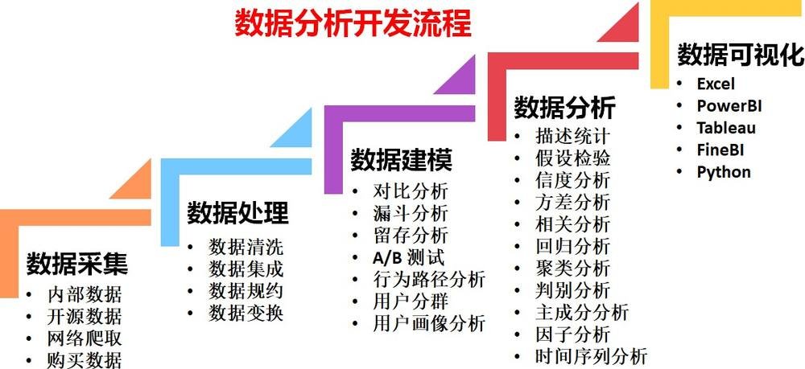

第 1 页 · Python业务场景应用编 内容三 常规数据预处理
Python业务场景应用编 内容三 常规数据预处理
宁悦
大连财经学院 管理学院
2026 年 8 月
第 2 页 · 学习目标
学习目标
掌握数据预处理的主要步骤：熟悉数据清洗、数据集成、数据变换和数据归约等步骤的定义、目的和应用场景，能够根据实际问题选择合适的数据预处理方法。
具备数据清洗的技能如缺失值处理、异常值处理、数据格式转换、数据归一化等。
具备数据集成的技能如数据合并、数据拼接、数据连接等。
能够使用 Python 实现数据预处理过程中的各种操作，如数据清洗、数据集成、数据变换和数据归约等，掌握相关 Python 库（如 pandas、numpy、sklearn 等）的使用方法，提高数据处理的编程实践能力。
第 3 页 · 目录
目录
1
数据预处理的目的
数据清洗
数据集成
数据变换
5
数据归约
6
案例分析
第 4 页 · 目录
目录
1
数据预处理的目的
数据清洗
数据集成
数据变换
5
数据归约
6
案例分析
第 5 页 · 数据预处理的目的
数据预处理的目的
原始数据可能会出现什么情况？
表 1: 电商购买数据示例
| 用户名 购买日期 | 商品名称 | 数量 | 单价 (元) | 地址 | |
| 张三 2024-01-01 | 笔记本电脑 | 1 | 5000 | 北京市朝阳区 | |
| 李四 | 手机 | 3000 | 上海市浦东新区 | ||
| 王五 / 赵六 | 2024-01-03 / 2024-01-04 | 无线耳机 / 移动电源 | 2 / -1 | 150 | 广州市天河区 / 深圳市南山区 |
| 张三 | 2024-01-01 | 笔记本电脑 | 1 | 5000 | 北京市朝阳区 |
第 6 页 · 数据预处理的目的
数据预处理的目的
原始数据可能会出现什么情况？
表 1: 电商购买数据示例
| 用户名 购买日期 | 商品名称 | 数量 | 单价 (元) | 地址 | |
| 张三 2024-01-01 | 笔记本电脑 | 1 | 5000 | 北京市朝阳区 | |
| 李四 | 手机 | 3000 | 上海市浦东新区 | ||
| 王五 / 赵六 | 2024-01-03 / 2024-01-04 | 无线耳机 / 移动电源 | 2 / -1 | 150 | 广州市天河区 / 深圳市南山区 |
| 张三 | 2024-01-01 | 笔记本电脑 | 1 | 5000 | 北京市朝阳区 |
收集的数据可能存在不完整、不正确、不一致的情况。收集的数据类型无法直接分析
收集的数据可靠性和真实性问题
第 7 页 · 数据预处理的目的
数据预处理的目的

第 8 页 · 数据预处理的目的
数据预处理的目的

数据预处理的过程
step1: 原始数据收集 step2: 数据清洗 step3: 数据集成 step4: 数据变换 step5: 数据规约